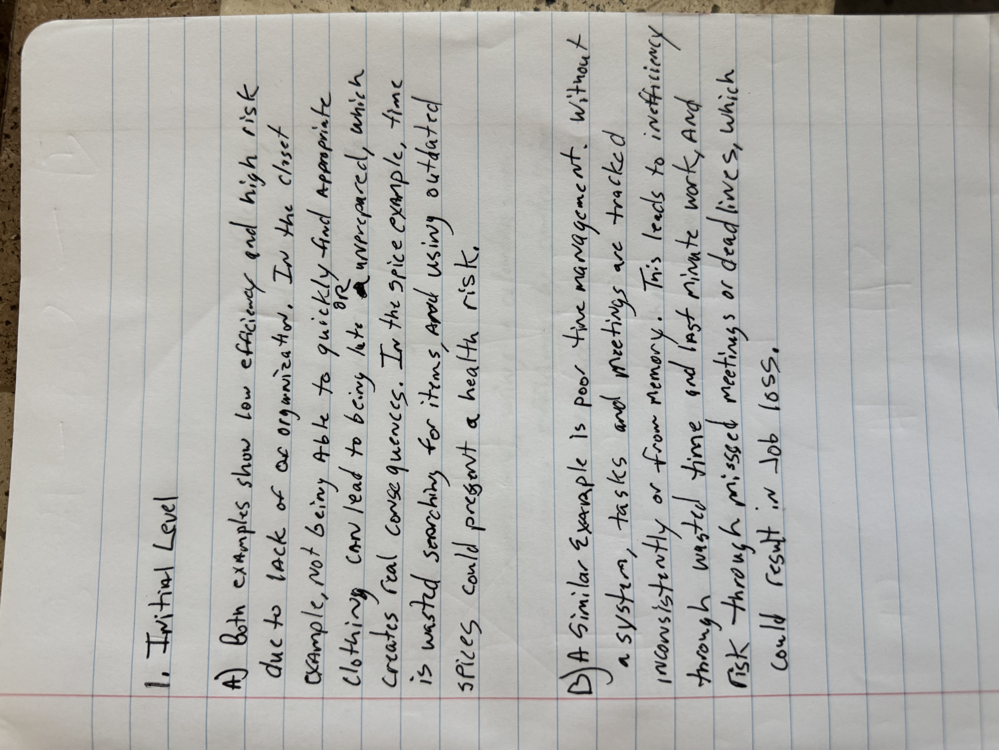
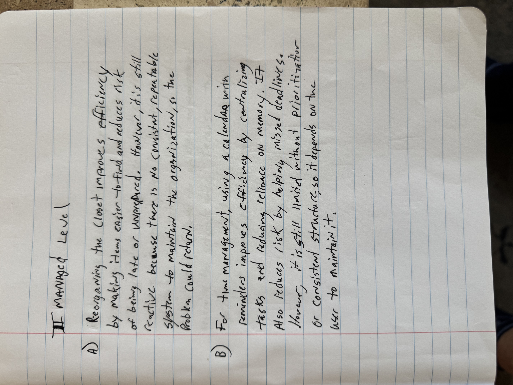
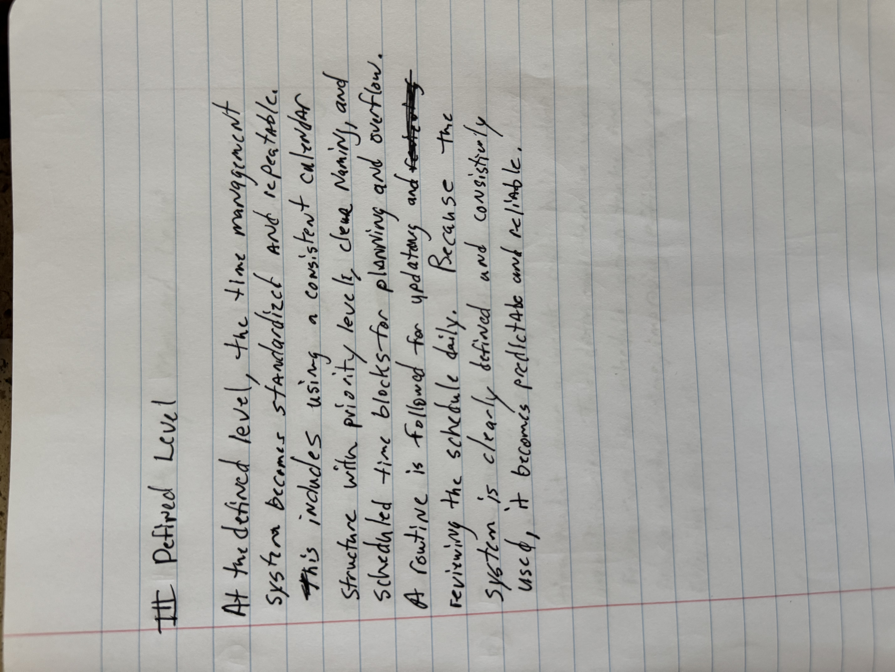
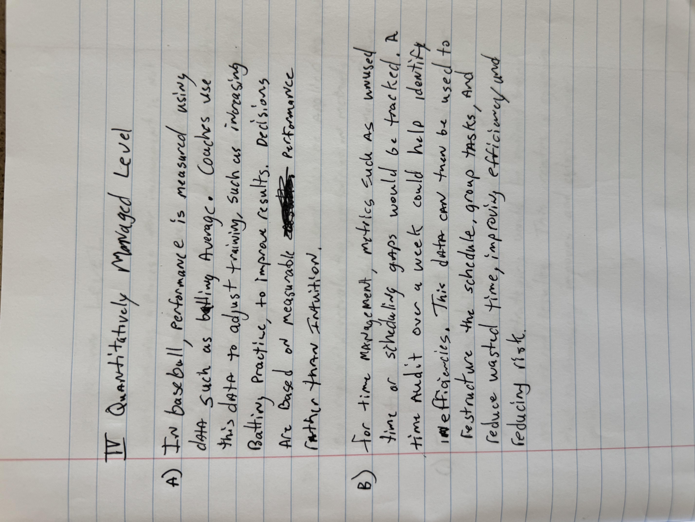
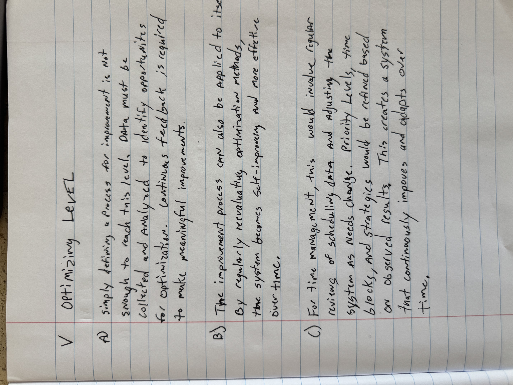
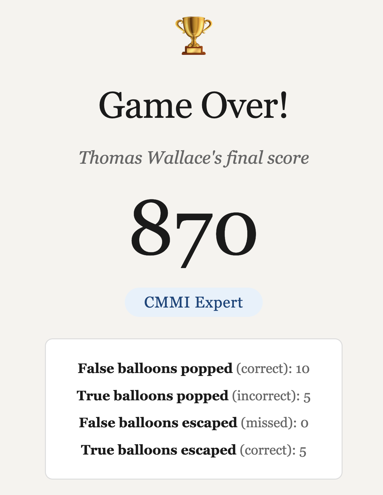

Module 8
Due: 3.31.2026
1. JavaScript Exercises
2. CMMI. Your answers for this question must be handwritten on paper. Then take (a) picture(s) of the handwritten answers on a cellphone, and upload the image(s) as your response to this question.
- Explain how these examples illustrate low efficiency and high risk.
- Explain another example of the initial level occurring in a person's personal or family life, and how it created low efficiency and/or high risk.

- Explain how the closet reorganization left things reactive, though smoother, with some increase in efficiency and decrease in risk, but leaving some room for future improvement in efficiency and risk.
- Explain another example of the initial level occurring in a For the example you devised of the initial level, recommend how to move it to the managed level, and how that would improve efficiency and risk.

- For the example that you developed the Managed Level for, above, build it out to the Defined Level. The result should be actually usable by someone, not just theoretical or good merely for points on a HW problem.

- Explain an operation at the Quantitatively Managed Level for a sport (computer game is fine if you like) or some other domain of your choice.
- For the example that you developed the Defined Level for, above, develop a plan for operating at the Quantitatively Managed Level. The result should be actually usable by someone, not just theoretical or good merely for points on a HW problem.

- Could defining a procedure (i.e. a process) for changing (i.e. optimizing) other processes raise an organization or part of an organization to the CMMI Optimizing Level?
- If a process was designed for optimizing other processes, could it be applied to itself?
- Describe a fictional (or real, if you can) scenario in which the example from an individual or family life you used above (or another example if you prefer) is extended to the Optimizing Level. Explain the process for optimizing, and the result.

3. Play this game and hand in a screenshot (of the entire computer screen) showing the final output of the game. Also explain a small thing you would change if you were going to change it by hand, and how you would go about doing that. Then explain one thing you would change if you were going to ask an AI to make the change, and give the prompt you would give the AI to ask it to do it. (You don't have to actually make these changes.)

By hand: I'd change the ballon count to match reality. It says there are 40 but they only show 20 during the game.
By prompt: I'd make sure the contrasts of the type on the balloons is more readable and accessible. Prompt: Using WCAG_2.2 as your guide update the site color scheme to meet modern accessibility standards.
4.Final Project Details
Final Project Link: WSET-3 Interactive Study Guide
This will be a solo project
Problem Definition: